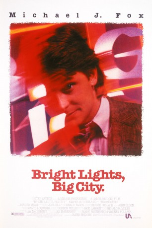
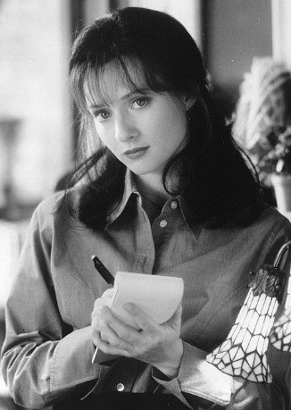
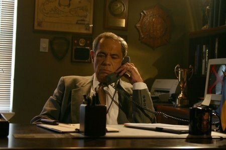

#7261 Die Grellen Lichter der Großstadt
 
 IMDB-Wertung: 5.6 / 10
IMDB-Wertung: 5.6 / 10  Metascore: 0
Metascore: 0 
Jamie Conway (Michael J. Fox) is an aspiring writer and yuppie living in New York City who seeks oblivion in cocaine and the glittery nightclub scene as his life falls apart (his wife leaves him, his mother dies, etc.). With his hard-partying friend Tad Allagash (Kiefer Sutherland) tagging along with him during their nights out, Jamie finds it increasingly difficult to show up every day at his unfulfilling job as a fast checker for a literary Manhattan magazine.
Jahr: 1988
Dauer: 103 Minuten
FSK: 16
Land: Japan Studio: MGM Home EntertainmentTonspuren: DD5.1 - ,
Untertitel:
Auflösung: 1080p (1920x1080) Größe: 8837 MB
Genre: Drama
Regisseur: Olivier Deflou
Drehbuch: Jay McInerney
Soundtrack:
Darsteller:
 Michael J. Fox als Jamie
Michael J. Fox als Jamie Kiefer Sutherland als Tad
Kiefer Sutherland als Tad- Phoebe Cates als Amanda
 Swoosie Kurtz als Megan
Swoosie Kurtz als Megan Frances Sternhagen als Clara
Frances Sternhagen als Clara- Tracy Pollan als Vicky
 John Houseman als Mr. Vogel
John Houseman als Mr. Vogel Charlie Schlatter als Michael
Charlie Schlatter als Michael Dianne Wiest als Mother
Dianne Wiest als Mother Alec Mapa als Yasu Wade
Alec Mapa als Yasu Wade William Hickey als Ferret Man
William Hickey als Ferret Man Sam Robards als Rich Vanier
Sam Robards als Rich Vanier- Jessica Lundy als Theresa
 Kelly Lynch als Elaine
Kelly Lynch als Elaine-  Maria Pitillo als Pony Tail Girl
 Susan Traylor als Leather Lady
Susan Traylor als Leather Lady David Hyde Pierce als Bartender at Fashion Show
David Hyde Pierce als Bartender at Fashion Show Mike Bacarella als Bakery Man
Mike Bacarella als Bakery Man- Sheila Johnson als Runway Model
 Nicholas Guest als Additional Voices
Nicholas Guest als Additional Voices Andrew Masset als Additional Voices
Andrew Masset als Additional Voices- Anna Mathias als Additional Voices
-  Reni Santoni als Additional Voices
 Wendy Schaal als Additional Voices
Wendy Schaal als Additional Voices- Jonathan Stark als Additional Voices
- Claudette Wells als Additional Voices
- Gary McNerney als Bar Patron , uncredited
- Antony Platt als Press Photographer-Fashion Show , uncredited
 Jason Robards als Drunken Writer - Mr. Hardy , uncredited
Jason Robards als Drunken Writer - Mr. Hardy , uncredited- Dondre Whitfield als Brian Jones , uncredited
- David Warrilow als Rittenhouse
- Gina Belafonte als Kathy
- Bernard Zette als Stevie
- Marika Blossfeldt als Bald Girl
- Peter Boyden als Maitre d'
- Annabelle Gurwitch als Barbara
- Russell Horton als Walter Tyler
- Michael Fischetti als Mannequin Craftsman
- Harvey Waldman als Deli Man
- Jim Babchak als Bartender at Disco
- Peg Murray als Receptionist
- Barbara Rucker als Elegant Lady
- Pat Santino als Security Guard
- Josie Bell als Runway Model
- Anne Bezamat als Runway Model
- Alva Chinn als Runway Model
- Dianne De Witt als Runway Model
- Nathalie Gabrielli als Runway Model
- Jennifer Houser als Runway Model
- Lynn Howland als Runway Model
Datei: X:\1988\Grellen Lichter der Großstadt, Die (1988, FSK16, 1920x1080).mkv seit 11.10.2017
Festplatte: HD 1987-1991
 Es gibt insgesamt 66 Filme in der Gruppe '1988'
Es gibt insgesamt 66 Filme in der Gruppe '1988'